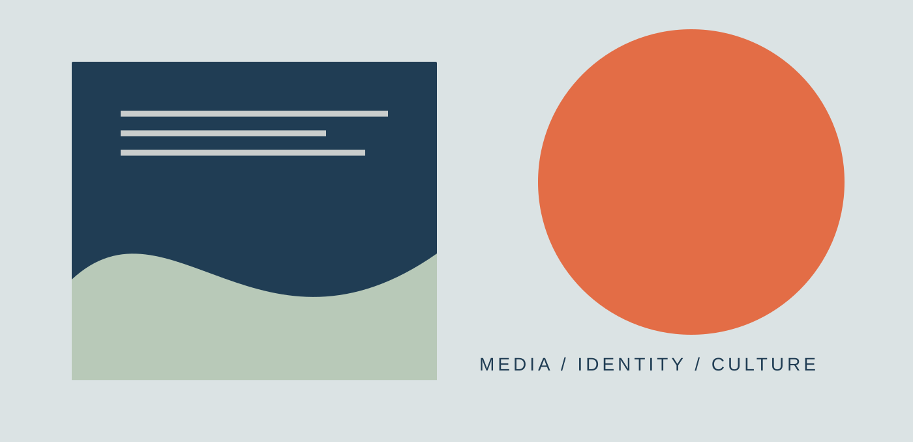

CASE STUDY / 01
Media, identity
& everyday life.
A critical research project exploring how media representations shape identity, belonging and the stories we tell about ourselves.

The question
What does this project investigate? Introduce the context, the issue you noticed and the question that guided your work.
Replace this example with your own research question and a few sentences explaining why it matters.
My approach
Describe the methods you used and why they suited the question. For example, you might discuss close textual analysis, literature review, audience research, interviews or platform analysis—only include methods you actually used.
Key findings
Summarise two or three findings. Explain the evidence that supports them, rather than only stating your opinion.
- Finding one: what you observed and what it suggests.
- Finding two: how it connects to your research question.
- Finding three: a tension, limitation or unexpected insight.
Reflection
What did you learn? What would you change if you did this project again? Reflect on your process, evidence, ethical choices or the limits of your conclusions.
Project links
Add a report, prototype or supporting materials ↗
Only link to work you have permission to share publicly.
Next case study
Stories across platforms ↗